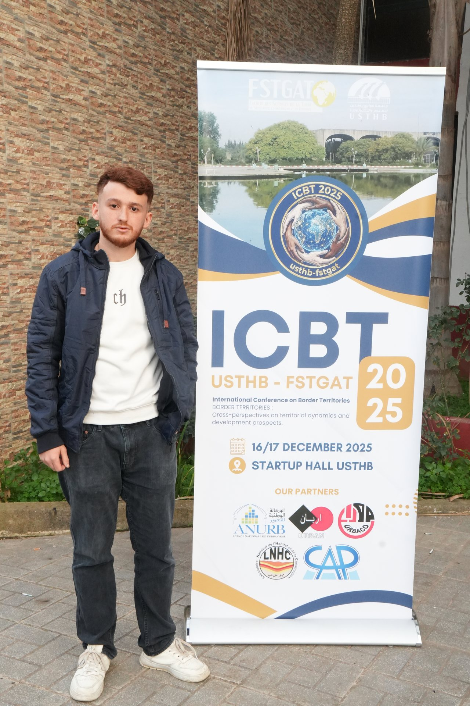
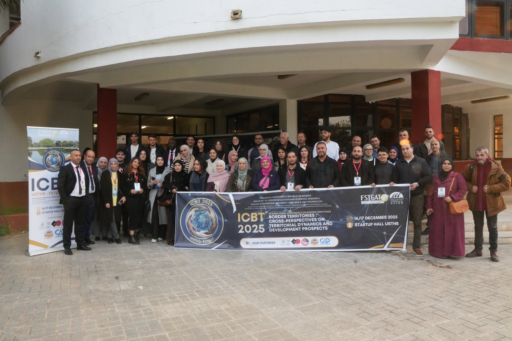
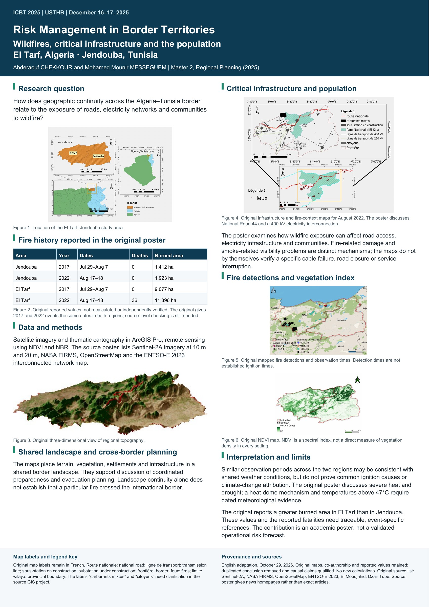

Conference participation and poster co-authorship
I took part in ICBT 2025 at USTHB on December 16–17, 2025, with a poster jointly prepared with Mohamed Mounir MESSEGUEM. Our work examined wildfire exposure across El Tarf in Algeria and Jendouba in Tunisia, using GIS, remote sensing, and maps of critical infrastructure. It was an academic conference contribution, not an operational risk forecast.
The conference was titled Territoires frontaliers : regards croisés sur les dynamiques territoriales et les perspectives de développement. An English translation is Border Territories: Cross-Perspectives on Territorial Dynamics and Development Prospects.
It was organized by the research team Dynamique et Valorisation des Ressources Territoriales, within the laboratory Villes, Régions et Gouvernance Territoriales.
The poster was prepared collaboratively. Both authors are credited throughout this page and in the downloadable English edition.
Photographs from ICBT 2025
These photographs document the conference setting at USTHB. The joint poster is shown separately below.


The joint poster
Risk Management in Border Territories: Assessing the Impact of Wildfires on Critical Infrastructure (Roads and Energy) and the Population in El Tarf and Jendouba
The work combines geographic context, vegetation indices, satellite fire detections and infrastructure mapping to examine wildfire exposure in a shared border region. The source poster lists ArcGIS Pro, Sentinel-2A, NASA FIRMS, OpenStreetMap and the ENTSO-E 2023 interconnected network map.
Original French title: La Gestion des Risques en Zone Frontalière : Évaluation de l'Impact des Incendies sur les Réseaux Vitaux (Routes, Énergie) et la Population (El Tarf, Jendouba)


How to read the maps
This is an academic poster, not an operational risk forecast. Satellite fire observations do not identify exact ignition times, and NDVI does not directly measure vegetation density in every setting. The original reported dates, fatalities and burned-area totals require traceable source checks; no new measurements have been calculated for the English adaptation.
The revised English wording removes a duplicated conclusion and qualifies unsupported causal interpretations. The original French poster is retained for comparison. No conference paper, journal publication or DOI is claimed.